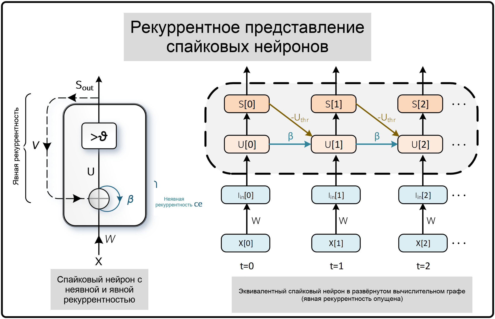
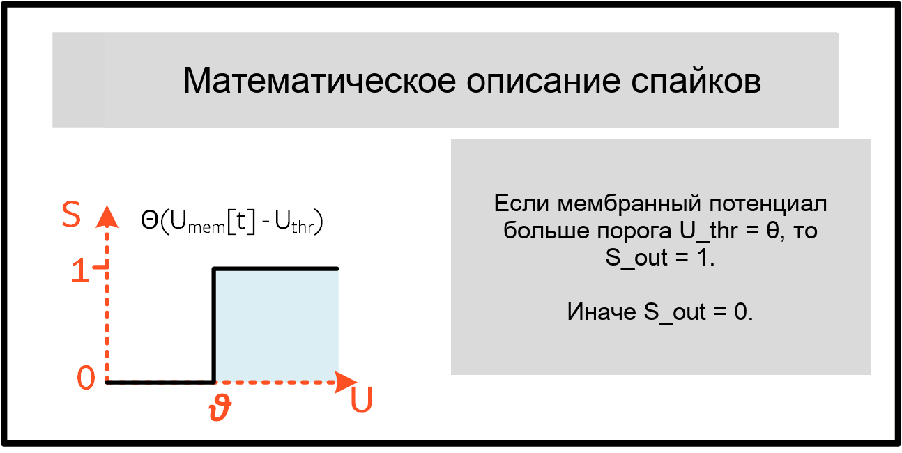
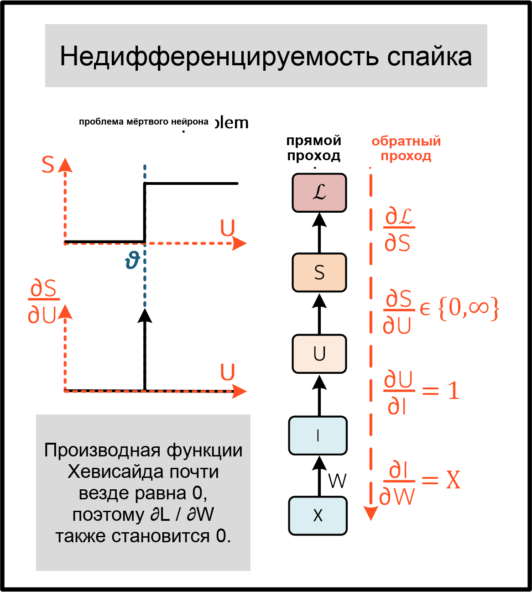
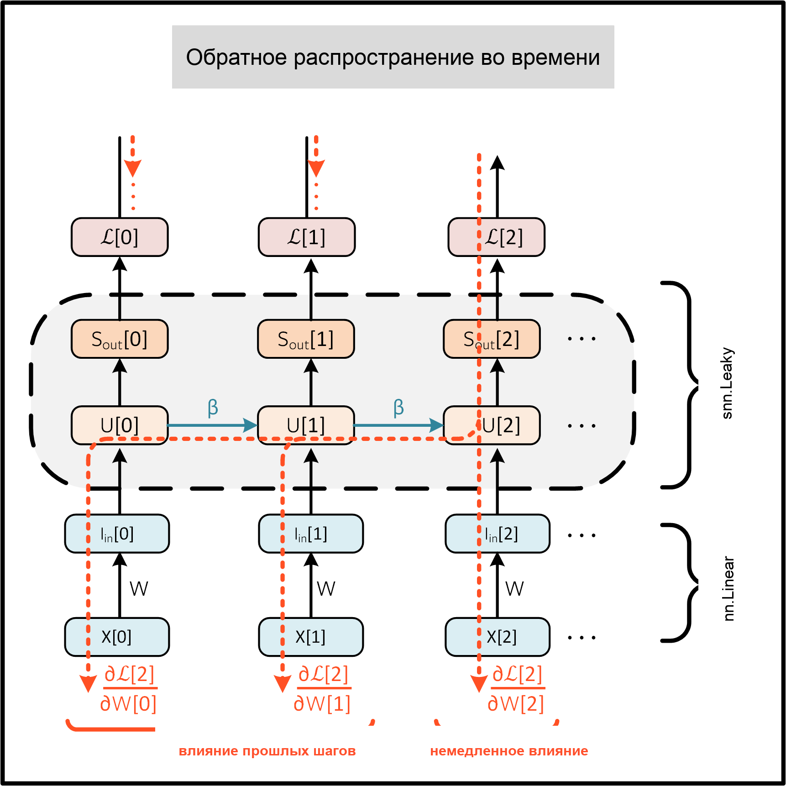
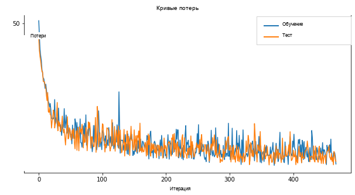

Русский перевод. Неофициальный перевод актуальной документации snnTorch latest (0.9.4). Оригинал: https://snntorch.readthedocs.io/en/latest/. Документация распространяется по лицензии CC BY-SA 3.0.
Учебник 5 - Обучение спайковых нейронных сетей с snnTorch
Учебное пособие написано Джейсоном К. Эшрагианом (www.ncg.ucsc.edu)

Серия учебных пособий snnTorch основана на следующей статье. Если вы считаете эти ресурсы или код полезными в своей работе, пожалуйста, укажите следующий источник:
Примечание
- Этот учебник является статической нередактируемой версией. Интерактивные редактируемые версии доступны по следующим ссылкам:
Введение
В этом руководстве вы:
Узнайте, как спайковые нейроны реализованы в виде рекуррентной сети
Поймите обратное распространение во времени и связанные с ним трудности в SNNs, такие как недифференцируемость спайков
Обучите полносвязную сеть на статическом наборе данных MNIST
Часть этого руководства была вдохновлена обширной работой Фридемана Ценке по SNNs. Посмотрите его репозиторий по суррогатным градиентам здесь, и моя любимая статья: E. O. Neftci, H. Mostafa, F. Zenke, Суррогатное градиентное обучение в спайковых нейронных сетях: Применение возможностей градиентной оптимизации к спайковым нейронным сетям. IEEE Signal Processing Magazine 36, 51–63.
В конце руководства будет реализован базовый алгоритм обучения с учителем. Мы будем использовать оригинальный статический набор данных MNIST и обучать многослойную полносвязную спайковую нейронную сеть с помощью градиентного спуска для классификации изображений.
Установите последнюю версию дистрибутива snnTorch из PyPi:
$ pip install snntorch
# imports
import snntorch as snn
from snntorch import spikeplot as splt
from snntorch import spikegen
import torch
import torch.nn as nn
from torch.utils.data import DataLoader
from torchvision import datasets, transforms
import matplotlib.pyplot as plt
import numpy as np
import itertools
1. Рекуррентное представление SNNs
В Учебное пособие 3, мы вывели рекурсивное представление нейрона с утечкой и интеграцией (LIF):
где входной синаптический ток интерпретируется как \(I_{\rm in}[t] = WX[t]\), и \(X[t]\) может быть произвольным входом спайков, ступенчатым/изменяющимся во времени напряжением или невзвешенным ступенчатым/изменяющимся во времени током. Спайковая активность представлена следующим уравнением, где если мембранный потенциал превышает порог, генерируется спайк :
Эта формулировка спайкового нейрона в дискретной рекурсивной форме почти идеально подходит для использования достижений в обучении рекуррентных нейронных сетей (RNNs) и моделей на основе последовательностей. Это иллюстрируется с помощью неявный рекуррентной связи для спада мембранного потенциала и отличается от явный рекуррентности, где выходной спайк \(S_{\rm out}\) подается обратно на вход. На рисунке ниже связь, взвешенная по \(-U_{\rm thr}\) представляет механизм сброса \(R[t]\).
{kind=link}

Преимущество развернутого графа в том, что он дает явное описание того, как выполняются вычисления. Процесс развертывания иллюстрирует поток информации вперед во времени (слева направо) для вычисления выходов и потерь, и назад во времени для вычисления градиентов. Чем больше временных шагов моделируется, тем глубже становится граф.
Обычные RNNs рассматривают \(\beta\) как обучаемый параметр. Это также возможно для SNNs, хотя по умолчанию они рассматриваются как гиперпараметры. Это заменяет проблемы затухающих и взрывающихся градиентов на поиск гиперпараметров. В будущем руководстве будет описано, как сделать \(\beta\) обучаемым параметром.
2. Недифференцируемость спайков
2.1 Обучение с использованием алгоритма обратного распространения
Альтернативный способ представления отношения между \(S\) и \(U\) в \((2)\) :
где \(\Theta(\cdot)\) является функцией Хевисайда:
{kind=link}

Обучение сети в такой форме создает серьезные проблемы. Рассмотрим один изолированный временной шаг вычислительного графа из предыдущего рисунка под названием «Рекуррентное представление спайковых нейронов», как показано на прямом проходе ниже:
{kind=link}

Цель состоит в том, чтобы обучить сеть, используя градиент функции потерь по весам, так чтобы веса обновлялись для минимизации потерь. Алгоритм обратного распространения достигает этого с помощью правила цепочки:
Из \((1)\), \(\partial I/\partial W=X\), и \(\partial U/\partial I=1\). Пока функция потерь еще не определена, мы можем предположить \(\partial \mathcal{L}/\partial S\) имеет аналитическое решение, в форме, аналогичной кросс-энтропийной или среднеквадратичной ошибке (подробнее об этом чуть позже).
Однако термин, с которым мы собираемся бороться, — это \(\partial S/\partial U\). Производная функции Хевисайда из \((3)\) является дельта-функцией Дирака, которая равна \(0\) везде, за исключением порога \(U_{\rm thr} = \theta\), где она стремится к бесконечности. Это означает, что градиент почти всегда будет обнулен (или насыщен, если \(U\) находится точно на пороге), и обучение не может происходить. Это известно как проблема мертвых нейронов.
2.2 Преодоление проблемы мертвых нейронов
Наиболее распространенный способ решения проблемы мертвых нейронов — оставить функцию Хевисайда как есть при прямом проходе, но заменить производный член \(\partial S/\partial U\) на что-то, что не убивает процесс обучения при обратном проходе, что будет обозначаться \(\partial \tilde{S}/\partial U\). Это может показаться странным, но оказывается, что нейронные сети довольно устойчивы к таким приближениям. Это обычно известно как суррогатный градиент подход.
Существует множество вариантов использования суррогатных градиентов, и мы углубимся в детали этих методов в Учебное пособие 6. Метод по умолчанию в snnTorch (начиная с v0.6.0) заключается в сглаживании функции Хевисайда с помощью арктангенса. Используемая производная обратного прохода:
где левая стрелка обозначает подстановку.
Та же модель нейрона, описанная в \((1)-(2)\) (также известная как
snn.Leaky нейрон из Урока 3) реализована в PyTorch ниже.
Не волнуйтесь, если вы этого не понимаете. Это будет сведено к одной строке кода с помощью snnTorch через мгновение:
# Leaky neuron model, overriding the backward pass with a custom function
class LeakySurrogate(nn.Module):
def __init__(self, beta, threshold=1.0):
super(LeakySurrogate, self).__init__()
# initialize decay rate beta and threshold
self.beta = beta
self.threshold = threshold
self.spike_gradient = self.ATan.apply
# the forward function is called each time we call Leaky
def forward(self, input_, mem):
spk = self.spike_gradient((mem-self.threshold)) # call the Heaviside function
reset = (self.beta * spk * self.threshold).detach() # remove reset from computational graph
mem = self.beta * mem + input_ - reset # Eq (1)
return spk, mem
# Forward pass: Heaviside function
# Backward pass: Override Dirac Delta with the derivative of the ArcTan function
@staticmethod
class ATan(torch.autograd.Function):
@staticmethod
def forward(ctx, mem):
spk = (mem > 0).float() # Heaviside on the forward pass: Eq(2)
ctx.save_for_backward(mem) # store the membrane for use in the backward pass
return spk
@staticmethod
def backward(ctx, grad_output):
(spk,) = ctx.saved_tensors # retrieve the membrane potential
grad = 1 / (1 + (np.pi * mem).pow_(2)) * grad_output # Eqn 5
return grad
Обратите внимание, что механизм сброса отсоединен от вычислительного графа, так как суррогатный градиент должен применяться только к \(\partial S/\partial U\), а не к \(\partial R/\partial U\).
Вышеуказанный нейрон создается с помощью:
lif1 = LeakySurrogate(beta=0.9)
Этот нейрон можно симулировать с помощью цикла for, как и в предыдущих уроках, в то время как механизм автоматического дифференцирования PyTorch (autodiff) отслеживает градиент в фоновом режиме.
То же самое можно сделать, вызвав snn.Leaky нейрон. Фактически, каждый раз, когда вы вызываете любую модель нейрона из snnTorch, ATan суррогатный градиент применяется к нему по умолчанию:
lif1 = snn.Leaky(beta=0.9)
Если вы хотите узнать, как ведет себя этот нейрон, обратитесь к Урок 3.
3. Обратное распространение во времени
Уравнение \((4)\) вычисляет градиент только для одного временного шага (называемого непосредственное влияние на рисунке ниже), но алгоритм обратного распространения во времени (BPTT) вычисляет градиент от потерь ко всем потомкам и суммирует их.
Вес \(W\) применяется на каждом временном шаге, и представьте, что потеря также вычисляется на каждом временном шаге. Влияние веса на текущие и прошлые потери должно быть суммировано для определения глобального градиента:
Смысл \((5)\) заключается в обеспечении причинности: ограничивая \(s\leq t\), мы учитываем только вклад непосредственных и предыдущих влияний \(W\) на потери. Рекуррентная система ограничивает вес, чтобы он был общим для всех шагов: \(W[0]=W[1] =~... ~ = W\). Следовательно, изменение \(W[s]\) будет иметь одинаковый эффект на все \(W\), что подразумевает, что \(\partial W[s]/\partial W=1\):
В качестве примера изолируем предыдущее влияние из-за \(s = t-1\) только; это означает, что обратный проход должен отслеживать один шаг назад во времени. Влияние \(W[t-1]\) на потери можно записать как:
Мы уже имели дело со всеми этими членами из \((4)\), за исключением \(\partial U[t]/\partial U[t-1]\). Из \((1)\), этот член временной производной просто равен \(\beta\). Итак, если бы мы действительно хотели, теперь мы знаем достаточно, чтобы скрупулезно вычислить производную каждого веса на каждом временном шаге вручную, и это выглядело бы примерно так для одного нейрона:
{kind=link}

Но, к счастью, autodiff от PyTorch делает это за нас в фоновом режиме.
Примечание
Механизм сброса был опущен на приведенном выше рисунке. В snnTorch сброс включен в прямой проход, но отсоединен от обратного прохода.
4. Настройка функции потерь / декодирование вывода
В обычной, неимпульсной нейронной сети задача классификации с учителем для нескольких классов берет нейрон с наивысшей активацией и рассматривает его как предсказанный класс.
В импульсной нейронной сети есть несколько вариантов интерпретации выходных импульсов. Наиболее распространенные подходы:
Частотное кодирование: Принять нейрон с наибольшей частотой срабатывания (или количеством импульсов) как предсказанный класс
Кодирование задержкой: Принять нейрон, который срабатывает первым как предсказанный класс
Это может показаться знакомым по Учебному пособию 1 по нейронному кодированию. Разница в том, что здесь мы интерпретируем (декодируем) выходные импульсы, а не кодируем/преобразуем исходные входные данные в импульсы.
Давайте сосредоточимся на частотном коде. Когда входные данные передаются в сеть, мы хотим, чтобы правильный класс нейронов выдавал наибольшее количество импульсов за время выполнения симуляции. Это соответствует наибольшей средней частоте срабатывания. Один из способов достичь этого — увеличить мембранный потенциал правильного класса до \(U>U_{\rm thr}\), а для неправильных классов до \(U<U_{\rm thr}\). Применение целевого значения к \(U\) служит заместителем для модуляции импульсного поведения из \(S\).
Это можно реализовать, взяв softmax от мембранного потенциала для выходных нейронов, где \(C\) — количество выходных классов:
Перекрестная энтропия между \(p_i\) и целевым значением \(y_i \in \{0,1\}^C\), который является one-hot вектором цели, получается с помощью:
Практический эффект заключается в том, что мембранный потенциал правильного класса стимулируется к увеличению, а потенциалы неправильных классов уменьшаются. По сути, это означает, что правильный класс стимулируется к срабатыванию на всех временных шагах, в то время как неправильные классы подавляются на всех шагах. Это может быть не самая эффективная реализация SNN, но одна из самых простых.
Это целевое значение применяется на каждом временном шаге симуляции, таким образом также генерируя потери на каждом шаге. Затем эти потери суммируются в конце симуляции:
Это лишь один из многих возможных способов применения функции потерь к импульсной нейронной сети. Разнообразие подходов доступно для использования в snnTorch (в модуле snn.functional), и будет темой
будущего учебного пособия.
Разобравшись со всей теоретической базой, давайте наконец погрузимся в обучение полносвязной импульсной нейронной сети.
5. Настройка статического набора данных MNIST
# dataloader arguments
batch_size = 128
data_path='/tmp/data/mnist'
dtype = torch.float
device = torch.device("cuda") if torch.cuda.is_available() else torch.device("mps") if torch.backends.mps.is_available() else torch.device("cpu")
# Define a transform
transform = transforms.Compose([
transforms.Resize((28, 28)),
transforms.Grayscale(),
transforms.ToTensor(),
transforms.Normalize((0,), (1,))])
mnist_train = datasets.MNIST(data_path, train=True, download=True, transform=transform)
mnist_test = datasets.MNIST(data_path, train=False, download=True, transform=transform)
# Create DataLoaders
train_loader = DataLoader(mnist_train, batch_size=batch_size, shuffle=True, drop_last=True)
test_loader = DataLoader(mnist_test, batch_size=batch_size, shuffle=True, drop_last=True)
6. Определение сети
# Network Architecture
num_inputs = 28*28
num_hidden = 1000
num_outputs = 10
# Temporal Dynamics
num_steps = 25
beta = 0.95
# Define Network
class Net(nn.Module):
def __init__(self):
super().__init__()
# Initialize layers
self.fc1 = nn.Linear(num_inputs, num_hidden)
self.lif1 = snn.Leaky(beta=beta)
self.fc2 = nn.Linear(num_hidden, num_outputs)
self.lif2 = snn.Leaky(beta=beta)
def forward(self, x):
# Initialize hidden states at t=0
mem1 = self.lif1.init_leaky()
mem2 = self.lif2.init_leaky()
# Record the final layer
spk2_rec = []
mem2_rec = []
for step in range(num_steps):
cur1 = self.fc1(x)
spk1, mem1 = self.lif1(cur1, mem1)
cur2 = self.fc2(spk1)
spk2, mem2 = self.lif2(cur2, mem2)
spk2_rec.append(spk2)
mem2_rec.append(mem2)
return torch.stack(spk2_rec, dim=0), torch.stack(mem2_rec, dim=0)
# Load the network onto CUDA if available
net = Net().to(device)
Код в forward() функции будет вызван только после того, как
входной аргумент x будет явно передан в net.
fc1применяет линейное преобразование ко всем входным пикселям из набора данных MNIST;lif1интегрирует взвешенный входной сигнал во времени, испуская спайк, если выполняется условие порога;fc2применяет линейное преобразование к выходным спайкамlif1;lif2это ещё один слой спайковых нейронов, интегрирующий взвешенные спайки во времени.
7. Обучение SNN
7.1 Метрика точности
Ниже приведена функция, которая принимает пакет данных, подсчитывает все спайки от каждого нейрона (т.е. частотный код за время моделирования), и сравнивает индекс наибольшего количества с истинной целью. Если они совпадают, то сеть правильно предсказала цель.
# pass data into the network, sum the spikes over time
# and compare the neuron with the highest number of spikes
# with the target
def print_batch_accuracy(data, targets, train=False):
output, _ = net(data.view(batch_size, -1))
_, idx = output.sum(dim=0).max(1)
acc = np.mean((targets == idx).detach().cpu().numpy())
if train:
print(f"Train set accuracy for a single minibatch: {acc*100:.2f}%")
else:
print(f"Test set accuracy for a single minibatch: {acc*100:.2f}%")
def train_printer():
print(f"Epoch {epoch}, Iteration {iter_counter}")
print(f"Train Set Loss: {loss_hist[counter]:.2f}")
print(f"Test Set Loss: {test_loss_hist[counter]:.2f}")
print_batch_accuracy(data, targets, train=True)
print_batch_accuracy(test_data, test_targets, train=False)
print("\n")
7.2 Определение функции потерь
Модуль nn.CrossEntropyLoss функция в PyTorch автоматически обрабатывает применение
softmax к выходному слою, а также вычисляет потери на
выходе.
loss = nn.CrossEntropyLoss()
7.3 Оптимизатор
Adam — это надежный оптимизатор, который хорошо работает на рекуррентных сетях, так что давайте используем его со скоростью обучения \(5\times10^{-4}\).
optimizer = torch.optim.Adam(net.parameters(), lr=5e-4, betas=(0.9, 0.999))
7.4 Одна итерация обучения
Возьмите первый пакет данных и загрузите его на CUDA, если доступно.
data, targets = next(iter(train_loader))
data = data.to(device)
targets = targets.to(device)
Преобразуйте входные данные в вектор размера \(784\) и передайте его в сеть.
spk_rec, mem_rec = net(data.view(batch_size, -1))
>>> print(mem_rec.size())
torch.Size([25, 128, 10])
Запись мембранного потенциала производится за:
25 временных шагов
128 образцов данных
10 выходных нейронов
Мы хотим вычислять потери на каждом временном шаге и суммировать их вместе, в соответствии с уравнением \((10)\):
# initialize the total loss value
loss_val = torch.zeros((1), dtype=dtype, device=device)
# sum loss at every step
for step in range(num_steps):
loss_val += loss(mem_rec[step], targets)
>>> print(f"Training loss: {loss_val.item():.3f}")
Training loss: 60.488
Потери довольно велики, поскольку они суммируются по 25 временным шагам. Точность также низкая (должна быть примерно около 10%), так как сеть не обучена:
>>> print_batch_accuracy(data, targets, train=True)
Train set accuracy for a single minibatch: 10.16%
Одно обновление весов применяется к сети следующим образом:
# clear previously stored gradients
optimizer.zero_grad()
# calculate the gradients
loss_val.backward()
# weight update
optimizer.step()
Теперь повторно выполните вычисление потерь и точности после одной итерации:
# calculate new network outputs using the same data
spk_rec, mem_rec = net(data.view(batch_size, -1))
# initialize the total loss value
loss_val = torch.zeros((1), dtype=dtype, device=device)
# sum loss at every step
for step in range(num_steps):
loss_val += loss(mem_rec[step], targets)
>>> print(f"Training loss: {loss_val.item():.3f}")
>>> print_batch_accuracy(data, targets, train=True)
Training loss: 47.384
Train set accuracy for a single minibatch: 33.59%
После всего одной итерации потери должны уменьшиться, а точность должна возрасти. Обратите внимание, как мембранный потенциал используется для вычисления кросс-энтропийных потерь, а количество спайков — для измерения точности. Также возможно использовать количество спайков в функции потерь (см. Учебник 6)
7.5 Цикл обучения
Давайте объединим всё в цикл
обучения. Мы будем обучать одну эпоху (хотя можете смело увеличить
num_epochs), показывая нашей сети каждый образец данных один раз.
num_epochs = 1
loss_hist = []
test_loss_hist = []
counter = 0
# Outer training loop
for epoch in range(num_epochs):
iter_counter = 0
train_batch = iter(train_loader)
# Minibatch training loop
for data, targets in train_batch:
data = data.to(device)
targets = targets.to(device)
# forward pass
net.train()
spk_rec, mem_rec = net(data.view(batch_size, -1))
# initialize the loss & sum over time
loss_val = torch.zeros((1), dtype=dtype, device=device)
for step in range(num_steps):
loss_val += loss(mem_rec[step], targets)
# Gradient calculation + weight update
optimizer.zero_grad()
loss_val.backward()
optimizer.step()
# Store loss history for future plotting
loss_hist.append(loss_val.item())
# Test set
with torch.no_grad():
net.eval()
test_data, test_targets = next(iter(test_loader))
test_data = test_data.to(device)
test_targets = test_targets.to(device)
# Test set forward pass
test_spk, test_mem = net(test_data.view(batch_size, -1))
# Test set loss
test_loss = torch.zeros((1), dtype=dtype, device=device)
for step in range(num_steps):
test_loss += loss(test_mem[step], test_targets)
test_loss_hist.append(test_loss.item())
# Print train/test loss/accuracy
if counter % 50 == 0:
train_printer()
counter += 1
iter_counter +=1
Терминал будет итеративно выводить что-то вроде этого каждые 50 итераций:
Epoch 0, Iteration 50
Train Set Loss: 12.63
Test Set Loss: 13.44
Train set accuracy for a single minibatch: 92.97%
Test set accuracy for a single minibatch: 90.62%
8. Результаты
8.1 График потерь обучения/тестирования
# Plot Loss
fig = plt.figure(facecolor="w", figsize=(10, 5))
plt.plot(loss_hist)
plt.plot(test_loss_hist)
plt.title("Loss Curves")
plt.legend(["Train Loss", "Test Loss"])
plt.xlabel("Iteration")
plt.ylabel("Loss")
plt.show()
{kind=link}

Кривые потерь зашумлены, так как потери отслеживаются на каждой итерации, а не усредняются по нескольким итерациям.
8.2 Точность на тестовом наборе
Эта функция проходит по всем мини-пакетам, чтобы получить меру точности по всем 10 000 образцов в тестовом наборе.
total = 0
correct = 0
# drop_last switched to False to keep all samples
test_loader = DataLoader(mnist_test, batch_size=batch_size, shuffle=True, drop_last=False)
with torch.no_grad():
net.eval()
for data, targets in test_loader:
data = data.to(device)
targets = targets.to(device)
# forward pass
test_spk, _ = net(data.view(data.size(0), -1))
# calculate total accuracy
_, predicted = test_spk.sum(dim=0).max(1)
total += targets.size(0)
correct += (predicted == targets).sum().item()
>>> print(f"Total correctly classified test set images: {correct}/{total}")
>>> print(f"Test Set Accuracy: {100 * correct / total:.2f}%")
Total correctly classified test set images: 9387/10000
Test Set Accuracy: 93.87%
Вуаля! Вот и всё для статического MNIST. Не стесняйтесь настраивать параметры сети, гиперпараметры, скорость затухания, использовать планировщик скорости обучения и т.д., чтобы посмотреть, сможете ли вы улучшить производительность сети.
Заключение
Теперь вы знаете, как построить и обучить полносвязную сеть на
статическом наборе данных. Спайковые нейроны также могут быть адаптированы к другим
типам слоев, включая свертки и пропускные соединения. Вооруженные
этими знаниями, теперь вы сможете создавать множество различных типов
SNN. В следующем
учебном пособии,
вы узнаете, как обучать спайковую сверточную сеть и упростить количество необходимого кода с помощью snn.backprop модуль.
Также особая благодарность Bugra Kaytanli за ценные отзывы об учебном пособии.
Если вам нравится этот проект, пожалуйста, рассмотрите возможность поставить звезду ⭐ репозиторию на GitHub, так как это самый простой и лучший способ поддержать его.